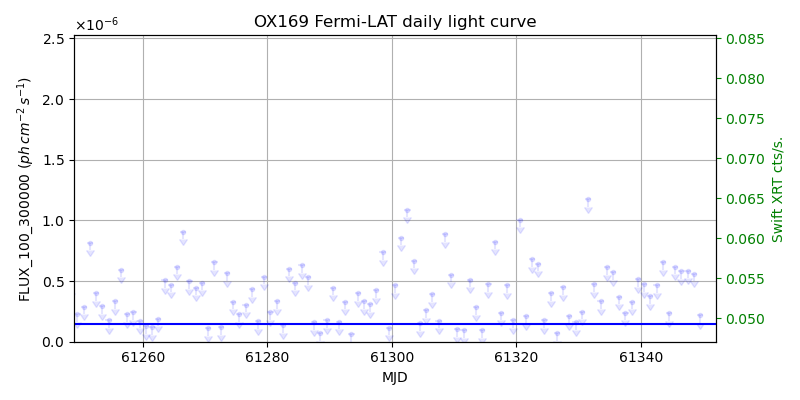
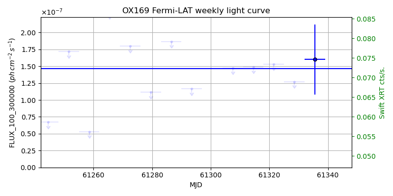
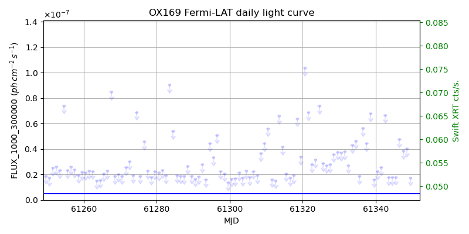
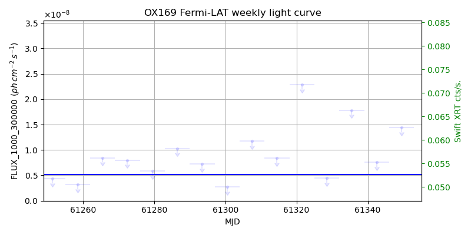

LAT Lightcurve site: https://fermi.gsfc.nasa.gov/ssc/data/access/lat/msl_lc/source/OX_169
Swift site: https://www.swift.psu.edu/monitoring/source.php?source=S32141+17
NED: Query
Time of last update of this page: UT: 2026-11-06 16:27 (MJD: 61350.686)
| Property | Value |
|---|---|
| R.A. | 21:43:35.52 |
| Dec. | 17:43:48.0 |
| z | 0.211 |
| 3FGL SpectrumType | LogParabola |
| 3FGL PL Index | |
| 3FGL Flux_100_300000 | 1.46e-07 1 / (s cm2) |
| 3FGL Flux_1000_300000 | 5.15e-09 1 / (s cm2) |
| 3FGL Flux >200 GeV | 5.61e-13 1 / (s cm2) |
| 3FGL Extrap. Crab >200 GeV | 0.00 |
| 3FGL Flux After EBL Absorption >200GeV | 3.06e-13 1 / (s cm2) |
| 3FGL EBL Crab Fraction >200GeV | 0.00 |

| MJD | dMJD | Flux | dFlux | Frac3FGL | FracCrab>200GeV | EBLFracCrab>200GeV |
|---|---|---|---|---|---|---|
| 61345.50 | 0.50 | 6.20e-07 | 0.00e+00 | 0.00 | 0.00 | 0.00 |
| 61346.50 | 0.50 | 5.82e-07 | 0.00e+00 | 0.00 | 0.00 | 0.00 |
| 61347.50 | 0.50 | 5.85e-07 | 0.00e+00 | 0.00 | 0.00 | 0.00 |
| 61348.50 | 0.50 | 5.60e-07 | 0.00e+00 | 0.00 | 0.00 | 0.00 |
| 61349.50 | 0.50 | 2.17e-07 | 0.00e+00 | 0.00 | 0.00 | 0.00 |

| MJD | dMJD | Flux | dFlux | Frac3FGL | FracCrab>200GeV | EBLFracCrab>200GeV |
|---|---|---|---|---|---|---|
| 61314.50 | 3.50 | 1.49e-07 | 0.00e+00 | 0.00 | 0.00 | 0.00 |
| 61321.50 | 3.50 | 1.53e-07 | 0.00e+00 | 0.00 | 0.00 | 0.00 |
| 61328.50 | 3.50 | 1.27e-07 | 0.00e+00 | 0.00 | 0.00 | 0.00 |
| 61335.50 | 3.50 | 1.60e-07 | 5.19e-08 | 1.09 | 0.00 | 0.00 |
| 61342.50 | 3.50 | 2.65e-07 | 0.00e+00 | 0.00 | 0.00 | 0.00 |

| MJD | dMJD | Flux | dFlux | Frac3FGL | FracCrab>200GeV | EBLFracCrab>200GeV |
|---|---|---|---|---|---|---|
| 61345.50 | 0.50 | 1.80e-08 | 0.00e+00 | 0.00 | 0.00 | 0.00 |
| 61346.50 | 0.50 | 4.75e-08 | 0.00e+00 | 0.00 | 0.00 | 0.00 |
| 61347.50 | 0.50 | 3.85e-08 | 0.00e+00 | 0.00 | 0.00 | 0.00 |
| 61348.50 | 0.50 | 4.02e-08 | 0.00e+00 | 0.00 | 0.00 | 0.00 |
| 61349.50 | 0.50 | 1.76e-08 | 0.00e+00 | 0.00 | 0.00 | 0.00 |

| MJD | dMJD | Flux | dFlux | Frac3FGL | FracCrab>200GeV | EBLFracCrab>200GeV |
|---|---|---|---|---|---|---|
| 61314.50 | 3.50 | 8.43e-09 | 0.00e+00 | 0.00 | 0.00 | 0.00 |
| 61321.50 | 3.50 | 2.29e-08 | 0.00e+00 | 0.00 | 0.00 | 0.00 |
| 61328.50 | 3.50 | 4.46e-09 | 0.00e+00 | 0.00 | 0.00 | 0.00 |
| 61335.50 | 3.50 | 1.78e-08 | 0.00e+00 | 0.00 | 0.00 | 0.00 |
| 61342.50 | 3.50 | 7.62e-09 | 0.00e+00 | 0.00 | 0.00 | 0.00 |
--------------------------------------------------------- Using user-supplied coords: 21:43:35.52 17:43:48.0 2000 --------------------------------------------------------- FLWO UT night of: 2026-11-07 Local Sid. @ Midnight: 02:42 Sunset (-15.0) (local, UT): 18:39 01:39 Sunrise (-15.0) (local, UT): 05:36 12:36 Moonrise (local, UT): 05:16 12:16 Moonset (local, UT): Moon phase: 0.04 --------------------------------------------------------- AzTime LSID UT Obj_el Obj_az Mn_el Mn_az Sep. --------------------------------------------------------- 18:39 21:20 01:39 75.1 156.6 -35.5 278.9 132.3 19:09 21:50 02:09 76.1 185.5 -41.6 283.5 132.0 19:39 22:20 02:39 74.0 212.3 -47.5 288.8 131.8 20:09 22:50 03:09 69.7 230.9 -53.3 295.3 131.5 20:39 23:20 03:39 64.3 243.1 -58.7 303.4 131.2 21:09 23:50 04:09 58.4 251.6 -63.5 313.9 130.9 21:39 00:20 04:39 52.3 258.0 -67.5 328.0 130.6 22:09 00:50 05:09 46.0 263.1 -70.0 346.2 130.3 22:39 01:20 05:39 39.6 267.6 -70.5 6.9 130.0 23:09 01:51 06:09 33.2 271.6 -68.8 26.6 129.7 23:39 02:21 06:39 26.8 275.3 -65.4 42.5 129.4 00:09 02:51 07:09 20.5 278.9 -60.9 54.4 129.1 00:39 03:21 07:39 14.2 282.5 -55.8 63.5 128.8 01:09 03:51 08:09 8.0 286.1 -50.2 70.6 128.5 01:39 04:21 08:39 2.1 289.9 -44.4 76.4 128.2 02:09 04:51 09:09 -2.6 293.9 -38.4 81.4 127.9 02:39 05:21 09:39 -9.8 298.2 -32.4 85.8 127.7 03:09 05:51 10:09 -15.3 302.9 -26.3 89.9 127.4 03:39 06:21 10:39 -20.6 308.0 -20.2 93.7 127.2 04:09 06:51 11:09 -25.4 313.8 -14.2 97.5 126.9 04:39 07:21 11:39 -29.8 320.2 -8.1 101.2 126.7 05:09 07:52 12:09 -33.6 327.3 -1.2 105.0 126.5 05:36 08:19 12:36 -36.4 334.5 3.4 108.6 126.4 --------------------------------------------------------- Dark hours >55 deg.: 2.78 srcstart (UT): 2026-11-07 01:38 srcend (UT): 2026-11-07 04:25